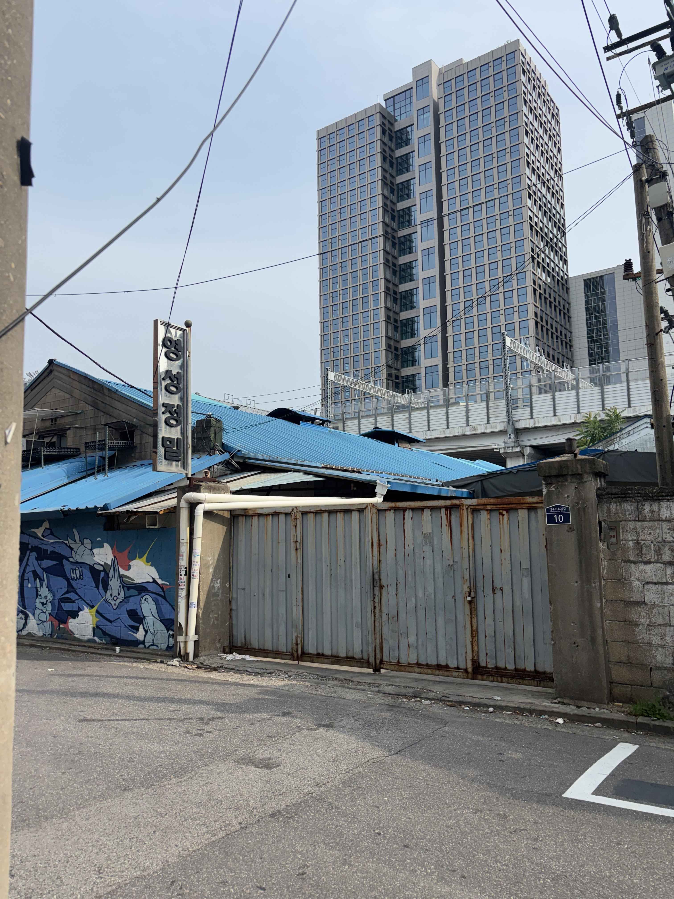

SCROLL
INTRODUCTION
붉은 벽돌과 철제 셔터문, 밤낮없이 돌아가는 윤전기 소리. 성수동 북측의 인쇄 골목은 오랜 시간 동안 도시의 보이지 않는 생산 엔진 역할을 해왔습니다. 하지만 급격한 주변부 개발과 세련된 상업화의 물결 속에서, 이 소중한 산업 생태계와 골목 가로는 점차 단절되고 고립되고 있습니다. 본 프로젝트는 성수동 고유의 인쇄 인프라를 보존하는 동시에, 시민의 보행과 문화적 크리에이티브를 수용하는 열린 거리로의 재생 마스터플랜을 제안합니다.

성수동 북측 인쇄 가로의 물리적·산업적 중심에는 '레드프린팅(Red Printing)'이 자리하고 있습니다. 소규모 다품종 수주형 디지털 프린팅 시스템을 선도적으로 구축한 핵심 기업으로, 기획부터 최종 포장 배송까지 일괄 처리하는 현대적 공급망을 가로 내에 안착시켰습니다.
이 거대한 공장 전면부는 가로 전체 유동 동선에 지대한 영향을 미치는 핵심 랜드마크이자, 향후 보행 오픈 스페이스 제안 마스터플랜의 가장 중요한 입체적 연계 거점입니다.
현황 자세히 보기 →